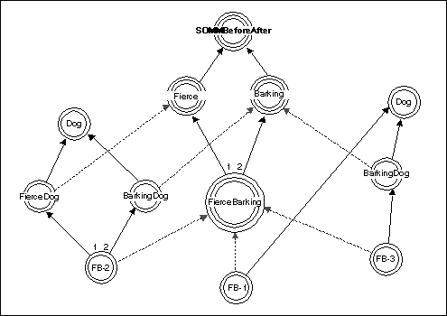

SOMMBeforeAfter is a metaclass that allows the user to create a class for which a particular method is invoked before each invocation of every method, nd for which a second method is invoked after each invocation. SOMMBeforeAfter defines two methods: sommBeforeMethod and sommAfterMethod. These two methods are intended to be overridden in the child of SOMMBeforeAfter to define the particular "before" and "after" methods needed for the client application.
For example, suppose a "Barking" metaclass (a subclass of SOMMBeforeAfter
overrides the sommBeforeMethod and sommAfterMethod with
a method that emits one bark when invoked. Thus, one can create the "BarkingDog"
class, whose instances (such as "Lassie") bark twice when "disturbed" by
a method invocation.
A hierarchy of metaclasses

The SOMMBeforeAfter metaclass is designed to be subclassed; a subclass (or child) of SOMMBeforeAfter is also a metaclass. The subclass overrides sommBeforeMethod or sommAfterMethod or both. These (redefned) methods are invoked before and after any method supported by instances of the subclass (these methods are called primary methods). That is, they are invoked before and after methods invoked on the ordinary objects that are instances of the class objects that are instances of the subclass of SOMMBeforeAfter.
The sommBeforeMethod returns a boolean value. This allows the "before" method to control whether the "after" method and the primary method get invoked. If sommBeforeMethod returns TRUE, normal processing occurs. If FALSE is returned, neither the primary method nor the corresponding sommAfterMethod is invoked. In addition, no more deeply nested before/after methods are invoked (see "Composition of before/after metaclasses" below). This facility can be used, for example, to allow a before/after metaclass to provide secure access to an object. The implication of this convention is that, if sommBeforeMethod is going to return FALSE, it must do any post-processing that might otherwise be done in the "after" method.
Caution: somInit and somFree are among the methods that get before/after behavior. This implies the following two obligations are imposed on the programmer of a SOMMBeforeAfter class. First, the implementation must guard against sommBeforeMethod being called before somInit has executed, and the object is not yet fully initialized. Second, the implementation must guard against sommAfterMethod being called after somFree, at which time the object no longer exists (see the example "C implementation for 'Barking' metaclass" below).
The following example shows the IDL needed to create a Barking metaclass. Just run the appropriate emitter to get an implementation binding, and then provide the appropriate "before" behavior and "after" behavior.
SOM IDL for 'Barking' metaclass
#ifndef Barking_idl
#define Barking_idl
#include <sombacls.idl>
interface Barking : SOMMBeforeAfter
{
#ifdef __SOMIDL__
implementation
{
//# Class Modifiers
filestem = barking;
callstyle = idl;
//# Method Modifiers
sommBeforeMethod : override;
sommAfterMethod : override;
};
#endif /* __SOMIDL__ */
};
#endif /* Barking_idl */
The next example shows an implementation of the Barking metaclass in which no barking occurs when somFree is invoked.
C implementation for 'Barking' metaclass
#define Barking_Class_Source
#include <barking.ih>
static char *somMN_somFree = "somFree";
static somId somId_somFree = &somMN_somFree;
SOM_Scope boolean SOMLINK sommBeforeMethod(Barking somSelf,
Environment *ev,
SOMObject object,
somId methodId,
va_list ap)
{
if ( !somCompareIds( methodId, somId_somFree )
printf( "WOOF" );
}
SOM_Scope void SOMLINK sommAfterMethod(Barking somSelf,
Environment *ev,
SOMObject object,
somId methodId,
somId descriptor,
somToken returnedvalue,
va_list ap)
{
if ( !somCompareIds( methodId, somId_somFree )
printf( "WOOF" );
}